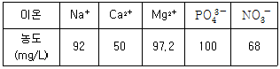
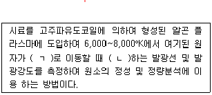
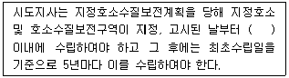
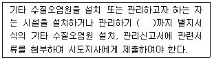

수질환경산업기사 (2006-03-05 기출문제)
1과목: 수질오염개론
1. 어느 물질의 반응시작 때의 농도가 200mg/L이고, 2시간 후의 농도가 35mg/L로 되었다. 반응시작 1시간 후의 반응물질 농도는? (단, 1차반응으로 간주한다.)
- 53.7mg/L
- 63.7mg/L
- 73.7mg/L
- 83.7mg/L
(정답률: 알수없음)

2. 수중의 용존산소균형에 영향을 주며 상수원에서 물에 맛이나 냄새를 주로 일으키는 미생물로 가장 알맞은 것은?
- 박테리아
- 곰팡이류
- 원생동물
- 조류
(정답률: 알수없음)
3. 96TLm은 NH3=2.5mg/L, Cu2+=1.5mg/L, CN- =0.2mg/L이고, 실제 시험수의 농도가 Cu2+=0.6mg/L, CN-=0.01mg/L, NH3=0.4mg/L이었다면 Toxic Unit는?
- 0.25
- 0.61
- 1.23
- 1.52
(정답률: 알수없음)
4. Ca2+ 이온의 농도가 20mg/L, Mg2+ 이온의 농도가 1.2mg/L인 물의 경도는 몇 CaCO3 mg/L인가?(단, Ca=40, Mg=24)
- 40
- 45
- 50
- 55
(정답률: 알수없음)
5. 자정계수에 대한 설명이다. 잘못된 것은?
- 자정계수란 재폭기계수를 탈산소계수로 나눈값을 말한다.
- 자정계수의 단위는 day-1이다.
- 수심이 얕을수록 자정계수는 커진다.
- 유속이 느린 하천일수록 자정계수는 작다.
(정답률: 알수없음)
6. 어느 하천 주변에 돼지를 사육하려고 한다. 하천의 유량은 100,000m3 /day이며 BOD는 1.5mg/L이다. 이 하천의 수질을 BOD 4.5mg/L로 보호하면서 돼지는 최대 몇 마리까지 사육할 수 있는가? (단, 돼지 한 마리당 1.5kgㆍBOD/day을 발생시키며 발생폐수량은 무시함)
- 50마리
- 100마리
- 150마리
- 200마리
(정답률: 알수없음)
7. 다음중 균류(Fungi)의 경험적인 분자식으로 가장 적절한 것은?
- C6H9O5N
- C7H12O5N
- C9H14O6N
- C10H17O6N
(정답률: 알수없음)
8. 질소순환에 대한 설명 중 틀린 것은?
- 질소를 고정하는 미생물을 공생적 질소고정작용을 하는 뿌리혹박테리아(Rhizobium)가 있다.
- 무기질소는 유기질소 형태로 결합된 후 단백질이나 핵산을 거쳐서 노폐물이나 혹은 생물체의 원형질 형태로 되돌아 온다.
- 종속영양미생물은 유기질소를 이화하게 되며 이때 무기질소인 질산성질소 형태로 변형되어 발효된다.
- 질산화미생물은 화학합성을 하는 독립영양미생물이다.
(정답률: 알수없음)
9. 메탄올(CH3OH)의 이론적인 COD/TOC의 비는?
- 2
- 3
- 4
- 5
(정답률: 알수없음)
10. 도시하수의 최종 BOD가 100mg/L이고, 탈산소계수가0 . 1 / d a y (상용대수에의한값)라면 BOD5(mg/L)는?
- 31.6
- 68.4
- 76.5
- 86.2
(정답률: 알수없음)
11. 어떤 하천의 물을 농업용수로 적당한가를 알아보기 위하여 수질분석한 결과는 다음과 같다. 이 하천의 Sodium Adsorption Ratio는 얼마인가? (단, 원자량은 Na = 23, Ca = 40, Mg = 24.3, P= 31, N = 14, O = 16)

- 4.75
- 2.75
- 1.75
- 0.75
(정답률: 알수없음)
12. 화학반응에서 의미하는 산화에 대한 설명이 아닌 것은?
- 산소와 화합하는 현상이다.
- 원자가가 증가되는 현상이다.
- 전자를 받아들이는 현상이다.
- 수소화합물에서 수소를 잃는 현상이다.
(정답률: 알수없음)
13. 물의 특성을 나타내는 용어와 가장 거리가 먼 것은?
- 공유결합
- 수소결합
- 비극성
- 육각형 결정구조
(정답률: 알수없음)
14. 해수의 함유성분 중 (holy seven)에 포함되지 않는 것은?
- SO4-2
- K+
- HCO3-
- Mn2+
(정답률: 알수없음)
15. 0.001% NaOH 수용액의 pH는? (단, 100% 해리됨)
- 9.4
- 10.4
- 11.4
- 12.4
(정답률: 알수없음)
16. Bacteria 9g의 이론적인 COD는? (단, Bacteria의 분자식은(C5H7O2N), 질소는 암모니아로 분해됨을 기준으로 함)
- 약 14.2g
- 약 12.8g
- 약 10.3g
- 약 8.5g
(정답률: 알수없음)
17. 어느공장에서 BOD 200mg/L인 폐수500m3/day를 BOD 4mg/L, 유량 200,000m3/day의 하천에 방류될 때 합류점의 BOD는?
- 4.20mg/L
- 4.49mg/L
- 4.72mg/L
- 4.84mg/L
(정답률: 알수없음)
18. 미생물과 온도는 매우 밀접한 관계가 있다. 대체적으로 약 5~35℃에서 온도가 10℃ 증가함에 따라 미생물의 성장속도는 2배 증가하지만, 최적온도이상의 고온에서는 미생물의 성장속도가 급격히 감소한다. 그 이유로 가장 적절한 것은?
- 세포내 단백질의 열변성
- 세포내 지질의 열변성
- 세포내 탄수화물의 열변성
- 선택적 투과성 저하
(정답률: 알수없음)
19. 수산화칼슘(Ca(OH)2)은 중탄산칼슘(Ca(HCO3)2)과 반응하여 탄산칼슘(CaCO3)의 침전을 형성한다고 할 때 10g의 Ca(OH)2에 대하여 얼마의 CaCO3가 생성되는가? (단, Ca : 40)
- 37g
- 27g
- 17g
- 7g
(정답률: 알수없음)
20. 임의의 시간후의 용존산소부족량(용존산소곡선식)을 구하기 위해 필요한 기본인자와 가장 거리가 먼 것은?
- 재포기계수
- BODu
- 수심
- 탈산소계수
(정답률: 알수없음)
2과목: 수질오염방지기술
21. BOD 300mg/L, 유량 2000m3/day의 폐수를 활성슬러지법으로 처리할 때 BOD슬러지부하 1.0kgㆍBOD/kgㆍMLSSㆍday, MLSS 2000mg/L로 하기 위한 포기조의 용적은?
- 100m3
- 200m3
- 300m3
- 400m3
(정답률: 알수없음)
22. BOD 300mg/L인 폐수를 20℃에서 살수여상법으로 처리한 결과 BOD가 60mg/L이었다. 이 폐수를 24℃에서 처리한다면, 유출수의 BOD는? (단, 처리효율 E1=E20×1.035T-20이다.)
- 40mg/L
- 35mg/L
- 30mg/L
- 25mg/L
(정답률: 알수없음)
23. 부유물질의 농도가 300mg/L인 1000톤의 하수의 1차 침전지(체류시간 1시간)에서 부유물질 제거율이 60%이다. 체류시간을 두배 증가시켜 제거율이 20% 증대되었다. 체류시간을 증대시키기 전과 후의 슬러지 발생량(m3)의 차이는? (단, 하수비중 : 1.0, 슬러지비중 : 1.0, 슬러지함수율 95% 기준)
- 1.2m3
- 2.2m3
- 3.2m3
- 4.2m3
(정답률: 알수없음)
24. 생물학적 원리를 적용하여 질소, 인을 제거하는 방법 중 A2/O 프로세스에 관한 설명으로 틀린 것은?
- 폐슬러지내 인의 함량이 높아 비료가치가 있다.
- 혐기조에서 인의 방출이 무산소조에서는 탈질이 이루어진다.
- 무산소조에서 혐기조로의 내부반송이 이루어진다.
- 폭기조에서 인의 과잉흡수가 일어난다.
(정답률: 알수없음)
25. 2차 처리수의 고도처리에 관한 설명과 가장 거리가 먼 것은?
- 응집침전도 고도처리의 하나로 이용되고 있다.
- 고도처리는 생물학적 2차 처리에서 제거되지 않은 성분을 더 제거하는 방법이다.
- 모래여과법은 고도처리에서 흡착이나 투석 등의 전처리로 이용된다.
- 폐수 중의 무기질소 화합물은 철염에 의한 응집침전으로 주로 제거된다.
(정답률: 알수없음)
26. 카드뮴 함유폐수의 처리방법과 가장 거리가 먼 것은?
- 수산화물 침전법
- 황화물 침전법
- 질화물 침전법
- 이온교환법
(정답률: 알수없음)
27. 암모늄이온(NH4+)을 27mg/L 함유하고 있는 폐수 4000m3를 이온교환수지로 NH4+를 제거하고자 할 때 100,000gㆍCaCO3/m3의 이온교환 능력을 갖는 양이온 교환수지의 소요용적은?
- 1m3
- 1.5m3
- 2m3
- 3m3
(정답률: 알수없음)
28. 펜톤산화의 특징과 가장 거리가 먼 것은?
- 최적 반응 pH는 3~4.5 정도의 범위이다.
- pH조정은 반응조에 과산화수소수와 철염을 가한 후 조절하는 것이 효과적이다.
- 과산화수소수는 철염이 과량으로 존재할 때 조금씩 단계적으로 첨가하는 것이 효과적이다.
- 폐수의 BOD는 감소하지만 COD는 증가한다.
(정답률: 알수없음)
29. 어느 도시의 정수장에서 급속 여과지를 설치하고자 한다. 이 도시의 계획인구는 50000명이며, 1일 1인 계획 급수량을 350L로 할 때 필요한 급속 여과지의 표면적(m2)은? (단, 급속 여과속도는 120m/day이다. 여과지를 1일 1인 계획급수량을 기준으로 설계한다고 가정함)
- 약 146 m2
- 약 151 m2
- 약 245 m2
- 약 258 m2
(정답률: 알수없음)
30. 생물학적 회전원판의 지름이 3m이며, 600매로 구성되었다. 유입수량이 1000m3/day이며, BOD 200mg/L인 경우 BOD부하(g/m2 ㆍday)는? (단,회전원판은 양면사용기준)
- 23.6
- 32.8
- 47.2
- 51.6
(정답률: 알수없음)
31. BOD가 200mg/L인 폐수 10000m3/day를 활성슬러지법으로 처리할 때 폭기조의 MLSS 농도가 2000mg/L, BOD-슬러지부하가 0.2kgㆍBOD/kgㆍMLSSㆍday 이라면 폭기조의 용적부하는 몇 kgㆍBOD/m3 ㆍday인가?
- 0.2
- 0.4
- 0.6
- 0.8
(정답률: 알수없음)
32. 활성슬러지조에 폐수유입량이 1000m3/day이고, 활성슬러지조의 SVI가 100이라 할 때 1L 메스실린더에 폭기액 1L를 취하여 30분간 정치하였더니 500mL의 침전물이 생겼다면 최종침전지에서 반송량은?
- 약 1000 m3/day
- 약 850 m3/day
- 약 700 m3/day
- 약 550 m3/day
(정답률: 알수없음)
33. 상수의 전처리를 위해 폭기장치(다단 산기기 : multiple-tray aeration)를 설치한다. 8mg/L의 이산화탄소를 포함하는 지하수가 3개의 트레이(tray)로 된 다단 산기기를 이용하여 가스를 제거한다면 유출수의 이산화탄소의 농도(mg/L)는? (단, 속도상수 : 0.33, 계획인구는 5000명, 수리학적 부하 400L/min·m2, C/Co=e-ton식 적용)
- 약 2.0 mg/L
- 약 3.0 mg/L
- 약 4.0 mg/L
- 약 5.0 mg/L
(정답률: 알수없음)
34. 포기조내 MLSS 농도가 3,500mg/L이고, 1L의 임호프콘에 30분간 침전시킨 후 슬러지 부피는 800mL였다. 이때의 SVI(Sludge Volume Index)는?
- 114.3
- 228.6
- 328.6
- 428.6
(정답률: 알수없음)
35. 고형물 농도 30,000mg/L, 폐수량 100m3/day인 알콜 증류폐수가 소화조로 유입되고 있다. 이 폐수의 수분은 97%, 유기물량은 고형물량의 80%이며 소화조는 고형물 부하를 3.5kg/m3 ㆍday로 하여 운전되고 있다. 소화 후 유입폐수에 대한 유출 폐수의 유기물 감소율이 85%를 나타냈을 때 가스발생률이 0.55m3/kg-제거유기물이라고 한다면 가스발생량은? (단, 비중은 1.0을 기준으로 한다.)
- 1122m3/day
- 2303m3/day
- 4049m3/day
- 5610m3/day
(정답률: 알수없음)
36. BOD가 600mg/L, SS가 250mg/L, COD가 800mg/L, 질소분이 20mg/L, 인(P)분이 10mg/L인 폐수를 활성슬러지법으로 처리하고자 한다면 공급해야할 [CO(NH2)2]의 양은 몇 mg/L인가? (단, BOD : N : P = 100 : 5 : 1)
- 약 13
- 약 22
- 약 43
- 약 52
(정답률: 알수없음)
37. 다음의 막분리방법 중 구동력이 다른 것은?
- 정밀여과
- 투석
- 역삼투
- 한외여과
(정답률: 알수없음)
38. 생물학적 처리에서 벌킹현상이 현저한 활성슬러지에서 관찰되는 사상성 미생물로 가장 적절한 것은?
- Sphaerotillus
- Vorticella
- Carchesium
- Philodina
(정답률: 알수없음)
39. 유적(油滴) A와 B의 지름은 동일하나 A의 비중은 0.88이고, B의 비중은 0.94이다. 이때의 A/B의 부상속도비는? (단, 기타조건은 같다.)
- 1.00
- 1.30
- 1.50
- 2.00
(정답률: 알수없음)
40. 활성 슬러지 법에서 폭기조의 유효용적이 800m3이고 MLSS 농도가 2400mg/L이다. 고형물체류시간(SRT)가 3일이라고 한다면 건조된 폐슬러지 생산량은?
- 640kg/day
- 780kg/day
- 920kg/day
- 1260kg/day
(정답률: 알수없음)
3과목: 수질오염공정시험방법
41. 0.025N KMnO4 수용액 1000mL를 조제하려면 KMnO4 몇 g이 필요한가? (단, KMnO4의 분자량은 158이다.)
- 0.79g
- 1.58g
- 3.16g
- 3.95g
(정답률: 알수없음)
42. 4각 웨어에 의하여 유량을 측정하려고 한다. 웨어의 수두 40cm, 웨어의 익류폭(절단폭) 5m이면 유량은?(단, 유량계수는 1.2이다.)
- 2.07m3/min
- 1.72m3/min
- 1.51m3/min
- 1.22m3/min
(정답률: 알수없음)
43. 유도결합플라스마 발광광도법의 원리에 관한 다음 설명 중 괄호 안의 내용으로 알맞게 짝지어진 것은?

- (ㄱ) 들뜬상태, (ㄴ) 흡수
- (ㄱ) 바닥상태, (ㄴ) 흡수
- (ㄱ) 들뜬상태, (ㄴ) 방출
- (ㄱ) 바닥상태, (ㄴ) 방출
(정답률: 알수없음)
44. 다음 수질오염 공정시험방법의 총칙에 관한 설명으로 틀린 것은?
- 분석용 저울은 0.1mg까지 달 수 있는 것이어야 한다.
- “유효측정농도”는 지정된 시험방법에 따라 시험하였을 경우 그 시험방법에 대한 최소 정량 한계를 의미하며, 그 미만은 불검출된 것으로 간주한다.
- “정량범위”라 함은 본 시험방법에 따라 시험할 경우 표준편차율 10%이하에서 측정할 수 있는 정량하한과 정량상한의 범위를 말한다.
- “표준편차율”이라 함은 표준편차를 정량범위로 나눈 값의 백분율이다.
(정답률: 알수없음)
45. 수질오염공정시험방법 중 6가 크롬(Cr+6)의 측정방법이 아닌 것은?
- 원자흡광광도법
- 이온전극법
- 흡광광도법
- ICP발광광도법
(정답률: 알수없음)
46. 측정시료 채취시 반드시 Glass용기를 사용해야 하는 측정항목은?
- 전기전도도
- 불소
- 시안
- 페놀류
(정답률: 알수없음)
47. 비소를 원자 흡광광도법으로 측정할 때의 내용으로 알맞은 것은?
- 비화수소를 아르곤-수소 불꽃에서 원자화 시켜 193.7nm에서 흡광도를 측정한다.
- 염화제일주석으로 시료중의 비소를 6가 비소로 산화시킨다.
- 망간을 넣어 비화수소를 발생시킨다.
- 발생된 비화수소를 3% 과산화수소수에 흡수시킨다.
(정답률: 알수없음)
48. 염소이온의 질산은 적정법에서 종말점의 색깔은?
- 엷은 적황색
- 엷은 적자색
- 엷은 자색
- 엷은 청색
(정답률: 알수없음)
49. 질소화합물의 측정방법이 알맞게 연결된 것은?
- 암모니아성 질소 : 환원 증류 - 킬달법(합산법)
- 아질산성 질소 : 흡광광도법(인도페놀법)
- 질산성 질소 : 이온크로마토그래피법
- 총질소 : 흡광광도법(디아조화법)
(정답률: 알수없음)
50. pH 측정시 pH 미터기의 조작에 관한 내용으로 틀린 것은?
- pH meter는 전원을 넣어 5분 이상 경과 후에 쓴다.
- pH meter의 재현성은 ±0.1 이내인 것을 쓴다.
- pH 11 이상의 시료는 오차가 크므로 알칼리에서 오차가 적은 특수전극을 쓰고 필요한 보정을한다.
- pH meter의 지시부는 비대칭 전위조절용 꼭지 및 온도보상용 꼭지가 있다.
(정답률: 알수없음)
51. 가스크로마토그래피법으로 유기인을 정량할 때 다음 사항 중 옳지 않은 것은?
- 검출기 : 불꽃광도형 검출기(FPD)를 사용한다.
- 농축장치 : 구데르나다니쉬형 농축기 또는 회전증발농축기를 사용한다.
- 운반가스 : 질소 또는 헬륨을 사용하여 유기인화합물이 3~30분간에 유출될 수 있도록 유량을 조절한다.
- 컬럼 : 안지름 3~4mm, 길이 0.5~2m의 석영제를 사용한다.
(정답률: 알수없음)
52. 가스크로마토그래프에 사용하는 검출기에 관한 설명으로 틀린 것은?
- 전자포획형검출기는 유기할로겐화합물, 니트로화합물 및 유기금속화합물을 선택적으로 검출할 수 있다.
- 불꽃광도형검출기는 인 또는 황화합물을 선택적으로 검출할 수 있다.
- 열전도도검출기는 유기질소화합물 및 유기염소화합물을 선택적으로 검출할 수 있다.
- 불꽃열이온화검출기는 불꽃이온화검출기에 알칼리 또는 알칼리토류 금속류의 튜브를 부착한 것이다.
(정답률: 알수없음)
53. 다음 중 가스크로마토그래피법에 의한 알킬수은 측정시에 사용되는 칼럼 충진제로 가장 적절한 것은? (단, 알킬수은 시험용)
- 다이소데실
- 크로모솔브W
- 디메칠슐폴레인
- SE-52
(정답률: 알수없음)
54. 다음 유량측정법 중에서 관내에 압력이 존재하는 관수로의 유량측정 방법이 아닌 것은?
- 오리피스(Orifice)
- 피토우(Pitot)관
- 파아샬플루움(Parshall fllume)
- 벤튜리미터(Venturi meter)
(정답률: 알수없음)
55. 다음은 망간의 흡광광도법(과요오드산 칼륨법)에 관한 설명이다. 옳은 것은?
- 과요오드산 칼륨법은 Mn2+을 KlO3으로 산화하여 생성된 MnO4-의 자홍색을 파장 552nm에서 흡광도를 측정한다.
- 염소나 할로겐 원소는 MnO4-의 생성을 방해하므로 염산 (1+1)을 가해 방해를 제거한다.
- 정량범위는 0.04~0.5mg, 표준편차율은 10~3%이다.
- 발색 후 고온에서 장시간 방치하면 퇴색되므로 가열(정확히 1시간)에 주의한다.
(정답률: 알수없음)
56. 시료 최대보존기간이 가장 짧은 측정항목은?
- 셀레늄
- 철
- 비소
- 6가 크롬
(정답률: 알수없음)
57. 최대 유량이 1m3/min 미만인 경우, 용기에 의한 유량측정에 관한 설명으로 틀린 것은?
- 유량(m3/min)=60×v/t이다. 여기서 t : 유수가 용량 v를 채우는데 걸린시간(sec), v : 측정용기의 용량(m3)
- 유수를 채우는데 소요되는 시간을 스톱워치로잰다.
- 용기는 물을 받아 넣는 시간을 20초 이하가 되도록 용량을 결정한다.
- 용기는 용량 100~200L인 것을 사용한다.
(정답률: 알수없음)
58. 흡광광도법에서 입사광의 99%가 흡수되는 경우 흡광도는?
- 0.1
- 0.5
- 1
- 2
(정답률: 알수없음)
59. 시료채취 직후 바로 시험을 할 수 없을 경우에는 측정항목에 따라 적당한 전처리를 하여 보존하여야 한다. 다음 각 항목별 측정을 위한 보존처리 방법으로서 적절치 않은 것은?
- 부유물질 분석용 시료는 4℃에 보관한다.
- 시안이온 분석용 시료는 수산화나트륨 용액을 가해 pH 12 이상으로 조절하여 4℃에 보관한다.
- 질산성 질소의 분석용 시료는 4℃에 보관한다.
- 페놀류 분석용 시료는 질산을 가해서 pH 2 이하로 조절한 후, CuSO4 1g/L를 첨가하여 4℃에 보관한다.
(정답률: 알수없음)
60. 농도표시에 관한 설명 중 틀린 것은?
- 십억분율을 표시할 때는 μg/L, ppb의 기호로 쓴다.
- 천분율을 표시할 때는 g/L, ‰의 기호로 쓴다.
- 용액의 농도는 %로만 표시할 때는 V/V%, W/W%를 나타낸다.
- 용액 100g중 성분용량(mL)을 표시할 때는 V/W%의 기호로 쓴다.
(정답률: 알수없음)
4과목: 수질환경관계법규
61. 사업장별 환경기술인의 자격기준에 관한 설명으로 알맞지 않는 것은?
- 특정수질유해물질이 포함된 오염물질을 배출하는 4종 및 5종 사업장은 3종 사업장의 환경기술인을 두어야 한다.
- 연간 180일 미만 조업하는 1, 2, 3종 사업장은 4, 5종 사업장의 환경기술인을 선임할 수 있다.
- 대기환경보전법 규정에 의하여 대기환경기술인으로 임명된 자가 수질환경기술인의 자격을 함께 갖춘 경우에는 수질환경기술인을 겸임할 수 있다.
- 공동방지시설에 있어서 폐수배출량이 4종 및 5종 사업장의 규모에 해당하는 경우에는 3종 사업장에 해당하는 환경기술인을 두어야 한다.
(정답률: 알수없음)
62. 수질환경보전법상 폐수처리방법이 화학적 처리방법인 경우에 하절기시 시운전기간은?
- 가동개시일부터 10일
- 가동개시일부터 15일
- 가동개시일부터 20일
- 가동개시일부터 30일
(정답률: 알수없음)
63. 수질오염상태를 파악하기 위하여 고시하는 측정망 설치계획에 포함되어야 하는 사항이 아닌 것은?
- 측정대상 오염물질
- 측정소를 설치할 토지 또는 건축물의 위치 및 면적
- 측정망 설치시기
- 측정망 배치도
(정답률: 알수없음)
64. 종말처리시설종류별 배수설비의 설치방법 및 구조기준과 가장 거리가 먼 것은?
- 배수관의 관경은 150mm 이상으로 한다.
- 배수관은 오수관과 분리하여 설치한다.
- 배수관입구에는 유효간격 10mm 이하의 스크린을 설치한다.
- 유량계 및 각종 계량기 설치는 배수설비의 부대시설로 본다.
(정답률: 알수없음)
65. 배출시설의 설치허가를 받아야 하는 시설 중 잘못된 것은?
- 특정수질유해물질이 발생되는 배출시설
- 특별대책지역 안에 설치하는 배출시설
- 상수원보호구역에 설치하거나 그 경계구역으로부터 하류로 유하거리 10킬로미터 이내에 설치하는 배출시설
- 상수원보호구역이 지정되지 아니한 지역 중 상수원 취수시설이 있는 지역의 경우에는 취수시설로부터 상류로 유하거리 15킬로미터이내에 설치하는 배출시설
(정답률: 알수없음)
66. 수질 생활환경 기준 중 호소의 Ⅰ등급 기준에 대한 내용으로 맞는 것은?
- 화학적 산소요구량 : 1mg/L 이하
- 총질소 : 0.30mg/L 이하
- 총인 : 0.10mg/L 이하
- 용존산소량 : 5.0mg/L 이상
(정답률: 알수없음)
67. 폐수 재이용업 등록기준에 관한 내용 중 알맞지 않는 것은?
- 기술능력 : 수질환경산업기사 1인 이상
- 폐수운반차량 : 청색으로 도장
- 저장시설 : 원폐수 및 재이용후 발생되는 폐수의 저장시설은 각각 폐수 재이용시설능력의 2배이상을 저장
- 운반장비 : 폐수운반장비는 용량 5m3 이상의 탱크로리
(정답률: 알수없음)
68. 기본 부과금의 지역별 부과계수로 틀린 것은?
- '청정'지역 : 2.0
- '가'지역 : 1.5
- '나'지역 : 1.0
- '특례'지역 : 1.0
(정답률: 알수없음)
69. 폐수배출시설 및 방지시설 운영기록의 보존 기간은? (단, 최종기재한 날부터, 폐수무방류 배출시설은 제외)
- 3년
- 2년
- 1년
- 6월
(정답률: 알수없음)
70. 위임업무보고내용이 '기타수질오염원 현황'인 경우 보고횟수 기준은?
- 연 1회
- 연 2회
- 연 4회
- 연 6회
(정답률: 알수없음)
71. 초과부과금 산정기준 중 오염물질 1kg당 부과액이 잘못 짝지어진 것은?
- 유기물질 - 250원
- 카드뮴 및 그 화합물 - 500,000원
- 시안화합물 - 300,000원
- 수은 및 그 화합물 - 1,250,000원
(정답률: 알수없음)
72. 다음의 이용목적별 적용대상 중 공업용수 2급과 하천수질 환경기준이 같은 것은?
- 중수용수
- 수산용수 3급
- 농업용수
- 상수원수 4급
(정답률: 알수없음)
73. 오염물질의 배출허용기준으로 알맞은 것은? (“가”지역, 1일 폐수 배출량 2000m3이상, 단위 mg/L)
- BOD 40 이하 COD 50 이하 SS 40 이하
- BOD 60 이하 COD 70 이하 SS 60 이하
- BOD 80 이하 COD 90 이하 SS 80 이하
- BOD 120 이하 COD 130 이하 SS 120 이하
(정답률: 알수없음)
74. 수질오염방지시설 중 생물화학적 처리시설은?
- 흡착시설
- 혼합시설
- 폭기시설
- 살균시설
(정답률: 알수없음)
75. 부과금산정에 적용하는 일일유량을 구하기 위한 측정유량의 단위는?
- m3/hr
- m3/min
- L/hr
- L/min
(정답률: 알수없음)
76. 수질환경보전법상 배출시설 등의 운영상황에 관한 기록을 보존하지 아니하거나 허위기록한 자에 대한 벌칙기준은?
- 과태료 100만원 이하
- 과태료 200만원 이하
- 벌금 100만원 이하
- 벌금 200만원 이하
(정답률: 알수없음)
77. 공공수역에 분뇨를 버린 자에 대한 벌칙기준은?
- 2년이하의 징역 또는 1000만원이하의 벌금
- 2년이하의 징역 또는 2000만원이하의 벌금
- 1년이하의 징역 또는 500만원이하의 벌금
- 1년이하의 징역 또는 1000만원이하의 벌금
(정답률: 알수없음)
78. 폐수종말처리시설 기본계획에 포함되어야 하는 사항과 가장 거리가 먼 것은?
- 폐수종말처리시설에서 처리하고자 하는 지역에 관한 사항
- 오염원분포 및 폐수배출량과 그 예측에 관한사항
- 부과금의 비용부담에 관한 사항
- 폐수종말처리시설에서 운전 및 유지관리에 관한 사항
(정답률: 알수없음)
79. ( )안에 알맞은 내용은?

- 1년
- 1년 6월
- 2년
- 2년 6월
(정답률: 알수없음)
80. ( )안에 알맞은 내용은?

- 10일전
- 15일전
- 20일전
- 30일전
(정답률: 알수없음)
A → B
반응속도식은 다음과 같다.
r = -d[A]/dt = k[A]
여기서 k는 속도상수이다.
반응물질 A의 농도 변화는 다음과 같이 나타낼 수 있다.
d[A]/dt = -k[A]
이를 적분하면,
ln[A] = -kt + C
여기서 C는 적분상수이다.
t=0일 때, [A] = 200mg/L 이므로,
ln[200] = C
따라서,
ln[A] = -kt + ln[200]
t=2시간일 때, [A] = 35mg/L 이므로,
ln[35] = -2k + ln[200]
이 두 식을 빼면,
ln[200/35] = 2k
k = ln[200/35] / 2
k = 0.287/h
t=1시간일 때, [A]를 구하기 위해,
ln[A] = -kt + ln[200]
ln[A] = -0.287/h × 1h + ln[200]
ln[A] = ln[200] - 0.287
A = e^(ln[200] - 0.287)
A = 83.7mg/L
따라서, 정답은 "83.7mg/L" 이다.